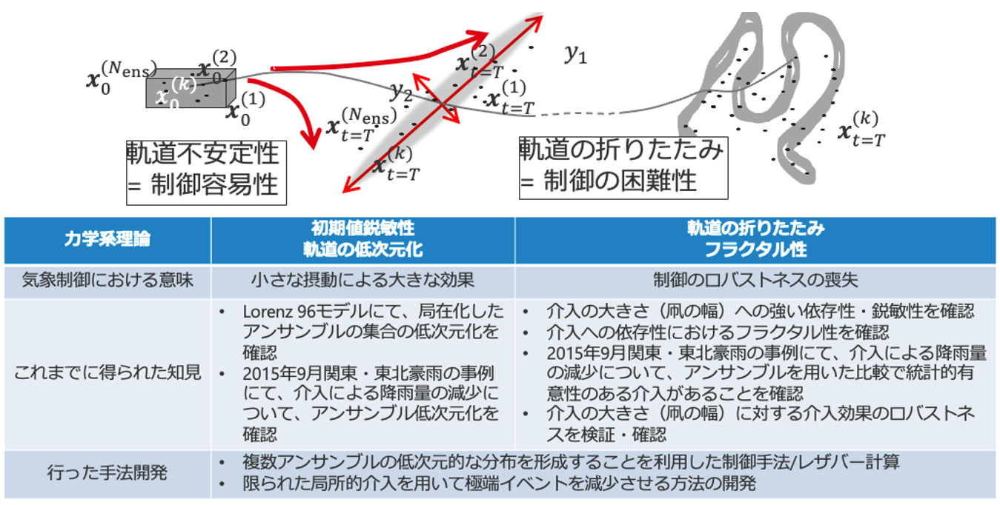

非線形システムの制御方法について
神経系、流体、気象現象、化学反応などを始め、我々を取り巻く非平衡な系においては、非線形現象があらゆるところに存在している。我々は、主に力学系の理論に基づき、非線形かつ高次元なシステムの制御を実現する手法の研究を進めている。応用としては、極端豪雨の回避など、気象現象の制御などを想定して研究を進めている。
力学系の観点からは、カオス力学系を特徴づける軌道の不安定性・初期値依存性は、小さな制御による大きなシステムの応答を実現しうるという意味で、制御の容易さにつながりうる性質である。軌道に沿った不安定性の非対称性をがあることを想定することは自然なことであるが、不安定方向こそが、制御入力を入れることによりシステムの挙動を変えることができる方向であると考えられる。逆に、軌道に沿った安定方向へ制御入力を入れることは、その摂動の影響が時間発展とともに消えてしまうことを考えれば、意味のあることではないだろう。データ同化によって得られる解析値のアンサンブル（すなわちシステムの現在の状態に対する推定値の集合）や、気象制御のための人工的な介入に対応し得る初期集合（すなわちシステムの現在の状態をスタートすることができる範囲の集合）を想定してみよう。これらは真の軌道付近に局在化した初期条件の集まりであり、その後の時間発展により軌道の不安定方向に沿って引き延ばされていくことが期待される。この結果として生じる一時的なアンサンブル分布は、実質的に低次元構造を示すことが想定される。このことは、実質的に制御することによって到達可能な空間が低次元であることを示唆しており、制御の最適化を行う空間が実質的に低次元であるはずであることを示唆する。我々はこれまでに、可能な制御によって到達できる点の集合などを想定した局在化された初期値の集合を考えた時に、軌道の不安定性により時間発展とともに軌道の集合が実質的に低次元に分布することを、Lorenz 63モデルや、Scale (Scalable Computing for Advanced Library and Environment)を用いた気象モデルの数値計算において確認した。
一方で、カオス的な力学系においては、しばしは、軌道の折りたたみに由来してフラクタル的な領域境界が発生することが知られており、これは非線形なシステムの制御を考える時には、制御入力に対する結果のロバストネスが失われる可能性があることを示唆している。我々は、実際にScaleを用いた数値実験で、気象モデルにおいてこのようなことが起きていることを実際に確認しつつある。これは、この問題が気象制御を考える上で避けて通れない重要な論点であることを示唆する結果である。また、気象以外の多くの非線形システムの制御において、避けて通れない論点であると思われる。
図に示したように、軌道の集合不安定性、低次元化、そしてフラクタル的な構造を持つ過程があることを踏まえた上で、その特性を把握し、制御が可能となる手法を開発することが重要であると考えられる。このような数値実験を通して知見の蓄積とともに、レザバー計算、レア・イベント・シミュレーション、データ同化といった工学的な手法を組み合わせ、気象制御に応用可能な手法の開発を進めている。具体的には、アンサンブルの過渡的な低次元化とレザバー計算を利用した制御方法の開発と、レア・イベント・シミュレーションにインスパイアされた、限られた局所介入による極端イベント制御の手法である。
